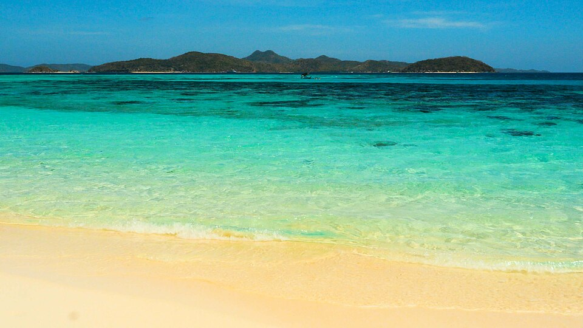
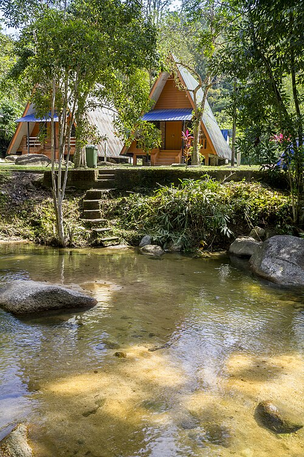
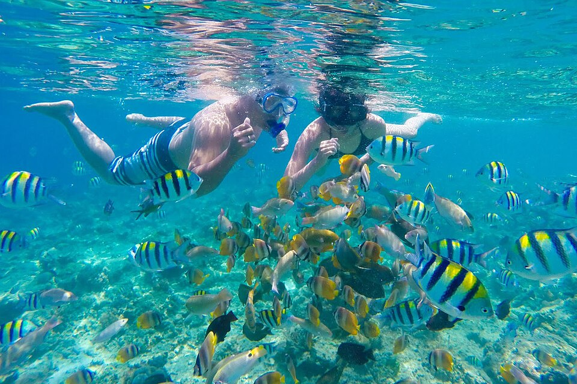

Beaches & water
Enjoy beaches, snorkeling, and chartered fishing tours.
Photo: Uscenes, Wikimedia Commons, CC BY 3.0.

Enjoy beaches, snorkeling, and chartered fishing tours.
Photo: Uscenes, Wikimedia Commons, CC BY 3.0.

Hike through the rainforest or try ziplining.
Photo: Su Siock Ching, Wikimedia Commons, CC BY-SA 4.0.
Visit Taniti's active volcano or take a boat or bus tour of the island.

Snorkeling and other coastal experiences are popular with visitors.
Photo: tourdilombok, Wikimedia Commons, CC BY-SA 4.0.
Visit the local history museum, art galleries, movie theater, arcade, bowling, pubs, microbrewery, and dance club.
Helicopter rides are available, and a nine-hole golf course is expected to become operational next year.